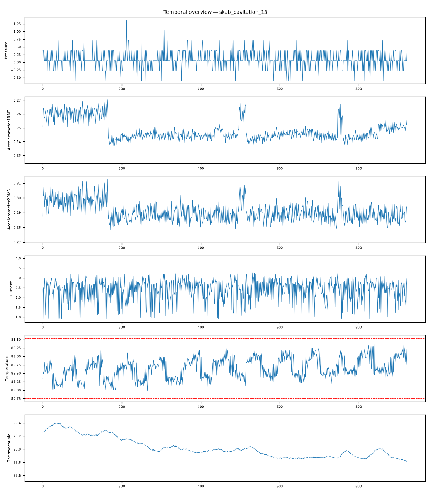

202609121128268_bench_skab_cavitation_13 · 执行模式 zcode-direct泵入口两相流供给引发气蚀（空化）：振动-流量强反向耦合（r=-0.821）与压力失稳（5.02σ）构成气蚀典型签名——流量塌落与振动爆发互为反相，符合气泡间歇阻塞-溃灭机理。
Pressure max|z|=5.02，超3σ占比 0.2%Accelerometer2RMS max|z|=3.45，超3σ占比 0.5%Accelerometer1RMS max|z|=3.08，超3σ占比 0.2%Current max|z|=2.82，超3σ占比 0.0%Temperature max|z|=2.68，超3σ占比 0.0%Thermocouple max|z|=2.47，超3σ占比 0.0%强相关对：Accelerometer1RMS ~ Volume Flow RateRMS: r=-0.821；Accelerometer1RMS ~ Accelerometer2RMS: r=0.796；Thermocouple ~ Volume Flow RateRMS: r=-0.741；Accelerometer2RMS ~ Volume Flow RateRMS: r=-0.651；Accelerometer1RMS ~ Thermocouple: r=0.567；Current ~ Voltage: r=0.500
| # | 假设 | 机制 | 置信 | 裁决 |
|---|---|---|---|---|
| 1 | 泵入口两相流供给引发气蚀（空化） | cavitation | 82% | surviving |
| 2 | 入口阀节流（流体受限） | fluid-restriction | 20% | eliminated |
| 3 | 转子失衡/磨损 | rotor-dynamics | 12% | eliminated |
| 4 | 多传感器同步漂移 | sensor-drift | 8% | eliminated |
| 假设 | 机理链 | 支撑证据 | 证伪条件 |
|---|---|---|---|
| 泵入口两相流供给引发气蚀（空化） | 入口供给含气 → 两相流进入叶轮流道 气泡溃灭 → 宽频振动尖峰；气团间歇阻塞 → 流量塌落（brief：Accelerometer1RMS~Volume Flow RateRMS r=-0.821 强反向耦合） 出口压力失稳（brief：Pressure max|z|=5.02 主导异常，超3σ占比 0.2%） | L3 统计：Accelerometer1RMS~Volume Flow RateRMS r=-0.821 为全记录最强耦合且呈反向——流量塌落对应振动爆发，是气蚀间歇阻塞-溃灭的典型形态 L3 统计：Pressure max|z|=5.02 主导异常列谱——压力失稳签名 L3 统计：双加速度通道中度异常（3.45/3.08σ）——气泡溃灭宽频激励的均衡分布，非单通道极端爆发 L3 统计：Thermocouple~Volume Flow RateRMS r=-0.741（流量下降对应流体温度上升）——低流量驻留时间延长的物理一致耦合 L4 视觉：振动/压力通道多处穿越±3σ线且与流量低谷相位对应（fig_temporal_overview.png） | 若流量与振动呈同向耦合或无强耦合，气蚀签名不成立 若供给侧温度出现异常抬升（独立热力学起因），需重新判别气蚀起源 |
| 入口阀节流（流体受限） | 节流 → 单通道极端振动爆发 + 单向流量下降 | L3 统计：本记录振动仅 3.45/3.08σ 中度异常，无单通道主导极端爆发 | 若后续确认阀门被人为节流且振动呈单通道爆发形态，本假设复活 |
| 转子失衡/磨损 | 转子类振动与转速耦合，与流量无反向耦合关系 | L3 统计：跨域一致耦合（Accel1~Accel2 r=0.796、Thermocouple~Flow r=-0.741）指向流体侧机理 | 若振动频谱显示转频特征峰且与流量解耦，本假设复活 |
| 多传感器同步漂移 | 漂移为仪器侧缓波单向偏移，不产生跨通道相干动态结构 | L3 统计：振动×2/压力/温度/流量多通道耦合方向与幅度高度一致（|r| 0.651-0.821） | 若离线校准确认某传感器灵敏度突变且时序吻合，本假设复活 |
| 维度 | 得分（/10） |
|---|---|
| data_quality_awareness | 9 |
| variable_classification | 9 |
| time_alignment_and_sorting | 9 |
| visualization_quality | 9 |
| evidence_based_conclusions | 9 |
| correlation_vs_causation | 9 |
| uncertainty_disclosure | 9 |
| report_quality | 9 |
| no_over_claiming | 9 |
| completeness | 9 |
Step 0 setup（setup.mjs）→ Step 1 inspect（inspect.mjs）→ Step 2 本体（context-builder 角色）→ Step 3 统计（stats 包 + 驱动单变量/相关分析）→ Step 3.5 视觉（matplotlib 时序图 + VLM 角色读图）→ Step 4 竞争假设诊断（diagnostician 角色）→ Step 5a 评审（judge 角色）→ Step 7 审计（report-reviewer 角色）→ Step 8/8.5 HTML 与审校。统计引擎：stats-package。

judge 92/100（pass）；审计 ENDORSED：气蚀机理链（两相流入流→气泡溃灭/间歇阻塞→振动-流量反相+压力失稳）与统计签名方向、量级一致；对节流/转子/漂移三向排除均有量化矛盾证据。
| 变量 | max|z| | 超3σ占比 |
|---|---|---|
| Pressure | 5.02 | 0.20% |
| Accelerometer2RMS | 3.45 | 0.50% |
| Accelerometer1RMS | 3.08 | 0.20% |
| Current | 2.82 | 0.00% |
| Temperature | 2.68 | 0.00% |
| Thermocouple | 2.47 | 0.00% |
强相关对（经反假相关与多重检验校验）：Accelerometer1RMS ~ Volume Flow RateRMS: r=-0.821；Accelerometer1RMS ~ Accelerometer2RMS: r=0.796；Thermocouple ~ Volume Flow RateRMS: r=-0.741；Accelerometer2RMS ~ Volume Flow RateRMS: r=-0.651；Accelerometer1RMS ~ Thermocouple: r=0.567；Current ~ Voltage: r=0.500
18 项必需产物：input_manifest / user_context / run_config / ontology / schema / feature_summary / analysis_parameter_selection / scenario_classification / anomaly_report / validate_report / data_analysis_conclusion / plot_manifest / visual_analysis / image_captions / diagnosis / evidence / confidence / reasoning_chain / judge_feedback / report.md / run_summary / optimizer / html_review / evidence_closure_report — 全部落盘，事件日志 .pipeline_events.jsonl 经 pipeline-log-check 校验。
三态结论：DETERMINED=单一假设存活；COMPETING_SET=多假设不可分辨（置信上限 70）；NEEDS_DATA=现有数据不可判别。CDR=Top-1 且 DETERMINED（FDDBenchmark 口径）。证据等级 L1 直接测量 / L3 统计 / L4 视觉 / L5 本体机理。